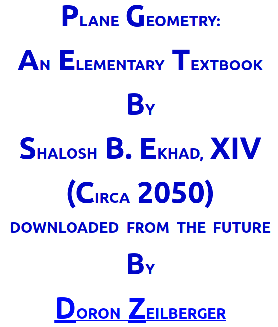

Introduction
This website originated from a blog post I wrote. I have since cleaned up the code and put everything into a Julia package PlaneGeometry.jl.
A book from the future
When I first got interested in computer algebra systems (CAS), I came across a book

Of course, Shalosh is not really a time traveler from a future. He/she/it is the computer of Doron Zeilberger, a mathematician who has been advocating for the use of computers in mathematics for decades. He often writes articles and papers with Shalosh named as a co-author.
The book title is just a joke üòÄÔ∏è. What Zeilberger really wants to say is that in the future, kids won't need to learn to do (at least) plane geometry with pencil and paper any more. Their homework will be writing codes so their computer ü§ñÔ∏è will do the mathematics for them.
A new book with Julia

Zeilberger's book was created with Maple, a powerful commercial CAS. But in principle, this can be done in any programming languages, e.g., Julia, which is a fast, dynamically and optionally typed, easy-to-use, open-sourced modern programming language. Its syntax is similar to Python, but superior in my opinion ü§ìÔ∏è.
Admittedly, Julia is not a CAS. But with the package SymPy.jl handling symbolic computation and Plots.jl drawing nice pictures, Julia is a reasonably good choice for writing a book like the one Zeilberger wrote.
So I have written a Julia package PlaneGeometry.jl to create Zeilberger's book. The purpose is mainly to demonstrate the use of various Julia packages, and for myself to learn a bit more about programming in Julia.
PlaneGeometry.jl

You can learn how to install Julia here. I will assume that you have already done that and learned a bit about how to use Julia.
To install PlaneGeometry.jl, open the Julia REPL and run the following code.
using Pkg;
Pkg.activate(".");
Pkg.add(PackageSpec(url="https://github.com/newptcai/PlaneGeometry.jl"))After that, you can load PlaneGeometry.jl in to REPL by
using PlaneGeometryMy original post is about proving Napoleon's theorem. You can find a revised version using PlaneGeometry.jl here. Other theorems proved in this packaged are list here. There is also a summary of geometric definitions that we need.